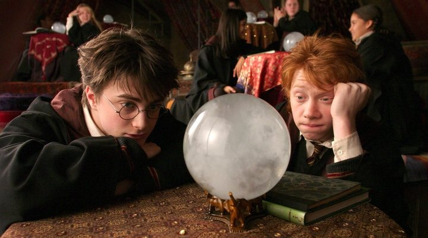
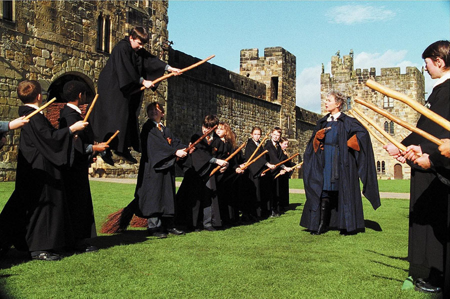
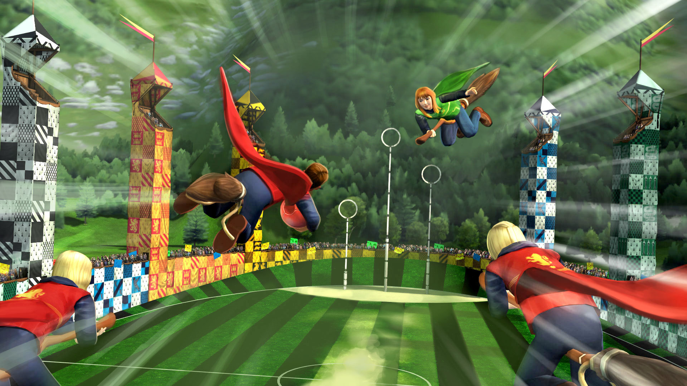
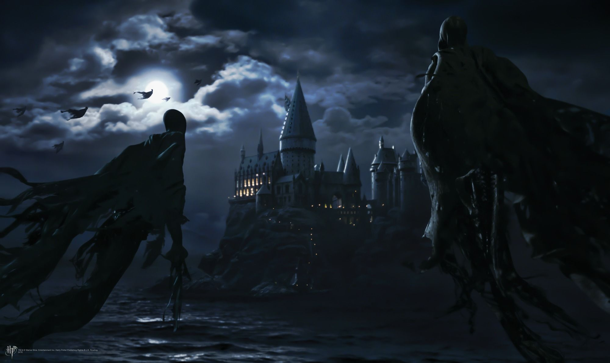
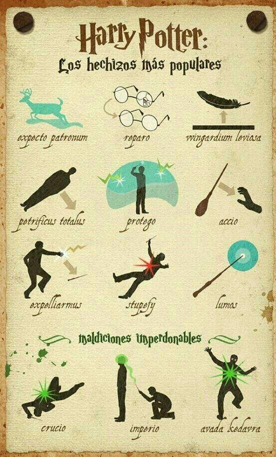

Los alumnos tienen clases obligatorias como: Pociones, Transformaciones, Herbología, Encantamientos, Defensa contra las Artes Oscuras, Historia de la Magia y Astronomía.

[8] Clases de magia
Una de las clases mas significativas, mas no obligatoria, son las clases de escoba en donde los alumnos aprenden a movilizarse por medio de estas.

[9] Clases de escoba
El Quidditch es un deporte tradicional,, donde dos equipos de siete jugadores montados en escobas juegan en un campo del tamaño de una pista de hockey. El campo es rectangular y mide 60 metros por 44 metros y tiene 3 aros de diferentes alturas a cada lado del campo. A partir del conocimiento de la escoba, los alumnos pueden elegir si participar en los torneos de Quidditch en donde representan su respectiva casa.

[10] Quidditch
Es bien sabido que Hogwarts es invadido por monstruos constantemente. Por esto, los alumnos tienen que luchar habitualmente contra estos arriesgando siempre su vida.

[11] Lucha contra monstruos
El hecho de estar en riesgo constantemente obliga a los estudiantes a estar preparados. Por ello se realizan practicas de hechizos con el fin de que los alumnos aprendan a manejarlos a la perfeccion y sepan usarlos en los momentos precisos.

[12] Hechizos